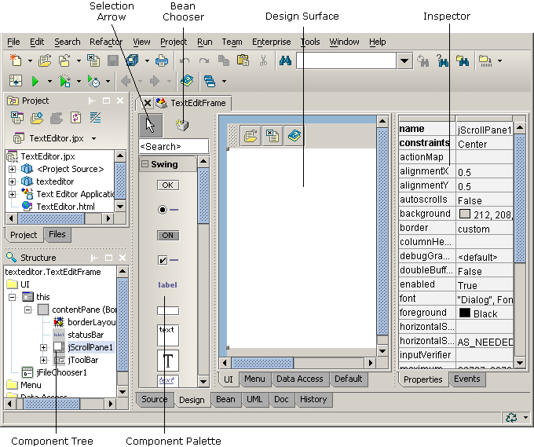
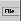

To design a window, double-click a designable file in the project pane, such as WelcomeFrame.java. Then click the Design tab at the bottom of JBuilder's IDE. To add a component to your application, click a component on the component palette, then drop it under its parent in the component tree or where you want your component to appear on the design surface. Set the control's properties and events by editing them in the Inspector.

To add a menu to your application, click the Design tab, then select a JMenuBar  or JPopupMenu component from the Swing Containers page of the component palette. Drop the component on the component tree. Then double-click the menu component in the component tree to start the menu designer so you can modify the menus and individual menu items.
For more information, see:
Designing Applications with JBuilder: Requirements for a class to be visually designable
Designing Applications with JBuilder: Creating user interfaces
Designing Applications with JBuilder: Designing menus